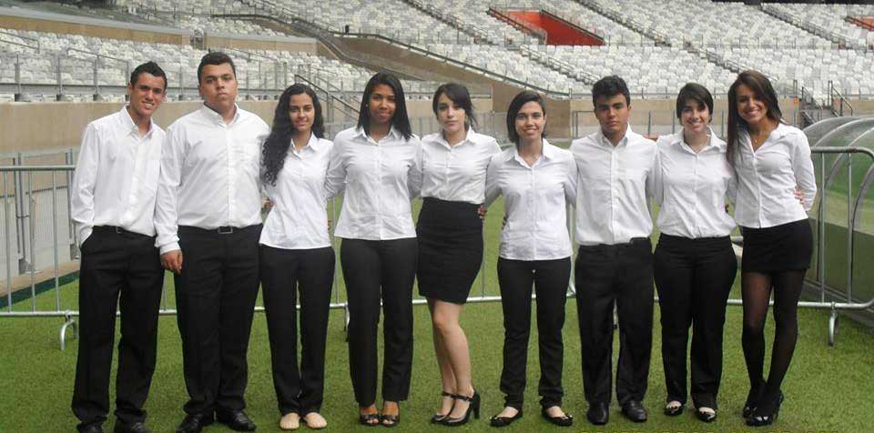

Sobre

O Instacup é uma rede social desenvolvida para a Copa do Mundo de 2014. Com o objetivo de promover a interação entre torcedores, permite que postem fotos, comentários de jogos, visualizem tabelas, olhem informações das seleções entre outras tantas atividades que se pode fazer na rede. Venha! Compartilhe conosco e com o mundo a sua paixão por futebol. Faça a diferença e torça pela sua seleção.